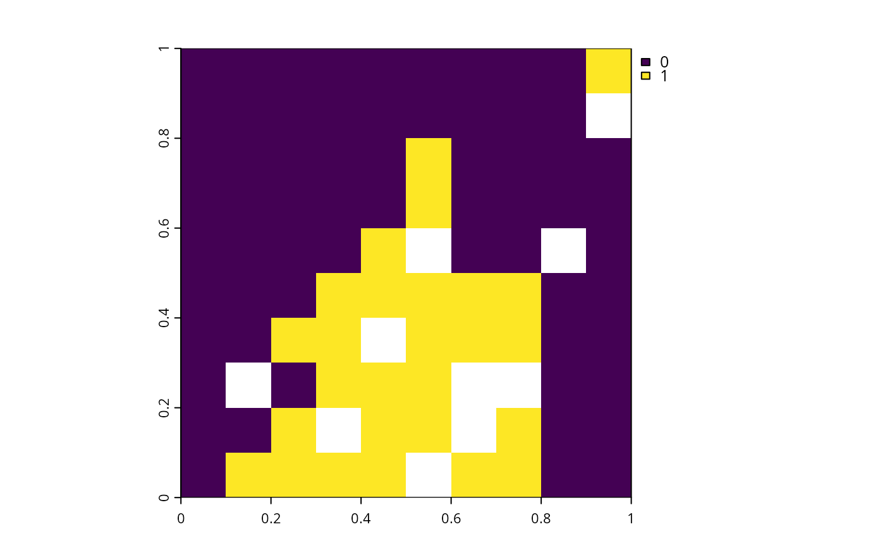

Add robust minimum shortfall objective
Source:R/add_robust_min_shortfall_objective.R
add_robust_min_shortfall_objective.RdAdd an objective to a conservation planning problem that minimizes the representation shortfalls for each feature group in a manner that is robust to uncertainty, whilst ensuring that the total cost of the solution does not exceed a budget.
Arguments
- x
prioritizr::problem()object.- budget
numericvalue specifying the maximum expenditure of the prioritization. For problems with multiple zones, the argument tobudgetcan be (i) a singlenumericvalue to specify a single budget for the entire solution or (ii) anumericvector to specify a separate budget for each management zone.
Value
An updated prioritizr::problem() object with the objective added
to it.
Details
The robust minimum shortfall objective seeks to find the set of planning
units that minimizes the representation shortfall for each feature group,
subject to a budget.
In particular, a target shortfall reflects difference
between the target for a feature and the amount held by a candidate solution,
expressed as a proportion of the target.
These target shortfalls are then calculated for each of the features
associated with a feature group, and a representation shortfall is used
describe how well all the features associated with a particular feature
group are represented by a candidate solution.
Thus this objective aims to get as close as possible to
reducing the representation shortfalls shortfalls to zero,
by getting as close as possible to reaching all of the targets
for the features associated with each of the feature groups.
Since the probabilistic calculations that underpin this objective are
non-linear, the chance constraint programming method
(Charnes and Cooper 1959) is used to formulate the optimization problem as a
mixed integer linear programming problem. With this method, the
confidence level parameter (i.e.,
specified per conf_level with add_constant_robust_constraints() or
add_variable_robust_constraints()) describes the quantile
of the target shortfalls associated with the feature group
that should be minimized during optimization. For example,
if conf_level = 1 for a feature group, then the 100th quantile is used and
this means that – after calculating the target shortfalls for each
feature associated with the feature group – the largest target
shortfall for the associated features is used to calculate the
representation shortfall for the feature group.
Additionally, if conf_level = 0.5 for a feature group, then the
50th quantile is used and this means that the median target shortfall
for the features associated with the group is used to represent the
representation shortfall for the feature group.
Mathematical formulation
This objective can be expressed
mathematically for a set of planning units (\(I\) indexed by
\(i\)), a set of feature groups (\(J\) indexed by \(j\)), and
a set of features associated with each feature group
(\(K\) indexed by \(k\)). Let \(c_i\) denote the cost of
planning unit \(i\), \(r_{ijk}\) the amount of feature
\(k\) associated with planning unit \(i\) for feature group
\(j\), \(T_j\) the target for each feature group
\(j\), \(w_j\) the weight for each feature group
\(j\), and \(\alpha\) the confidence level for uncertainty
(specified per conf_level with add_constant_robust_constraints() or
add_variable_robust_constraints()).
Additionally, to describe the decision variables,
let \(x_i\) denote the status of the planning unit \(i\)
(e.g., specifying whether
planning unit \(i\) has been selected or not with binary values),
\(v_{jk}\) the target shortfall for each feature \(k\)
associated with each feature group \(j\),
and \(y_j\) the representation shortfall for
for each feature group \(j\).
Given this terminology, the robust minimum shortfall formulation of the
reserve selection problem is formulated as follows.
$$ \mathit{Minimize} \space \sum_{j = 1}^{J} w_j \times y_j \\ \mathit{subject \space to} \\ \sum_{i = 1}^{I} x_i c_i \leq B \\ \Pr_ k\{\sum_{i = 1}^{I} ( x_i \times r_{ijk} ) + ( T_{j} \times v_{jk} ) \geq T_j \} \geq \alpha \quad \forall j \in J \\ y_j \geq v_{jk} \quad \forall j \in J, k \in K \\ 0 \leq y_j \leq 1 \quad \forall j \in J $$
Here, the objective function (first equation) is to minimize the weighted sum of the representation shortfalls for each feature group. The budget constraints (second equation) ensure that the solution does not exceed the budget. The probabilistic constraints (third equation) specify that only some of the target shortfall variables (i.e., \(v_{jk}\)) associated with each feature group are used to calculate the representation shortfall for each feature group, and the subset of target shortfall variables that are used is based on the confidence level (i.e., \(\alpha\)). For example, if \(\alpha=1\), then all of the target shortfall variables associated with each feature group must be used for the calculations. Alternatively, if \(\alpha=0.5\), then only enough of the target shortfall variables are required for the calculations to achieve a 50% chance of correctly calculating the target shortfall variables for a given feature group. The representation shortfall constraints (fourth equation) ensure that the representation shortfall variable for each feature group must be greater than or equal to the target shortfall variables of the features associated with the feature group. In combination with the other constraints, this means that the representation shortfall variable for a given feature group is calculated as the largest value of a subset of the target shortfall variables for the features associated with the feature group, and this particular subset is based on the confidence level. Thus if \(\alpha\) is closer to a value of 1, then the representation shortfall variable for each feature group is calculated with a greater degree of certainty and, in turn, the optimization process seeks a solution that is more robust to uncertainty. Since the probabilistic constraints are non-linear, an approximation method is used to linearize them so that the optimization problem can be solved with mixed integer programming exact algorithm solvers.
The chance constraint programming method is used to linearize the probabilistic constraints (Charnes and Cooper 1959). To describe this method, let \(m_{jk}\) denote a binary auxiliary variable for each feature \(k\) associated with feature group \(j\). Also \(K_j\) denote a pre-computed value describing the number of features associated with each feature group \(j\). Given this terminology, the method involves replacing the probabilistic constraints with the following linear constraints.
$$ \sum_{i = 1}^{I} x_i r_{ijk} + T_j y_j + T_j m_{jk} \geq T_{j} \quad \forall \space j \in J, \space k \in K \\ \sum_{k = 1}^{K_j} \frac{m_{jk}}{K_j} \leq 1 - \alpha \quad \forall \space j \in J\\ m_{jk} \in \{0, 1\} $$
Here, the solution calculates the representation shortfall variable for a given feature group based on a particular subset of the target shortfalls for the associated features. Specifically, this subset based on a particular number of the smallest target shortfall variables based on \(\alpha\). For example, if a feature group is associated with 30 features and \(\alpha=0.3\), then the representation shortfall for the feature group is calculated by identifying which 10 of these 30 features have the smallest target shortfall variables, and then calculating the maximum value of these 10 target shortfall variables. As such, the chance constraint programming method provides an intuitive approximation of the probabilistic constraints.
References
Charnes A & Cooper WW (1959) Chance-constrained programming. Management Science, 6(1), 73–79.
See also
Other functions for adding robust objectives:
add_robust_min_set_objective()
Examples
# \dontrun{
# Load packages
library(prioritizr)
library(terra)
#> terra 1.8.70
# Get planning unit data
pu <- get_sim_pu_raster()
# Get feature data
features <- get_sim_features()
# Define the feature groups,
# Here, we will assign the first 2 features to the group A, and
# the remaining features to the group B
groups <- c(rep("A", 2), rep("B", nlyr(features) - 2))
# Build problem with budget calculated as 30% total cost
p <-
problem(pu, features) %>%
add_robust_min_shortfall_objective(
budget = terra::global(pu, "sum", na.rm = TRUE)[[1]] * 0.3
) %>%
add_constant_robust_constraints(groups = groups, conf_level = 0.4) %>%
add_binary_decisions() %>%
add_relative_targets(0.3) %>%
add_default_solver(verbose = FALSE)
# Solve the problem
soln <- solve(p)
# Plot the solution
plot(soln)

# }